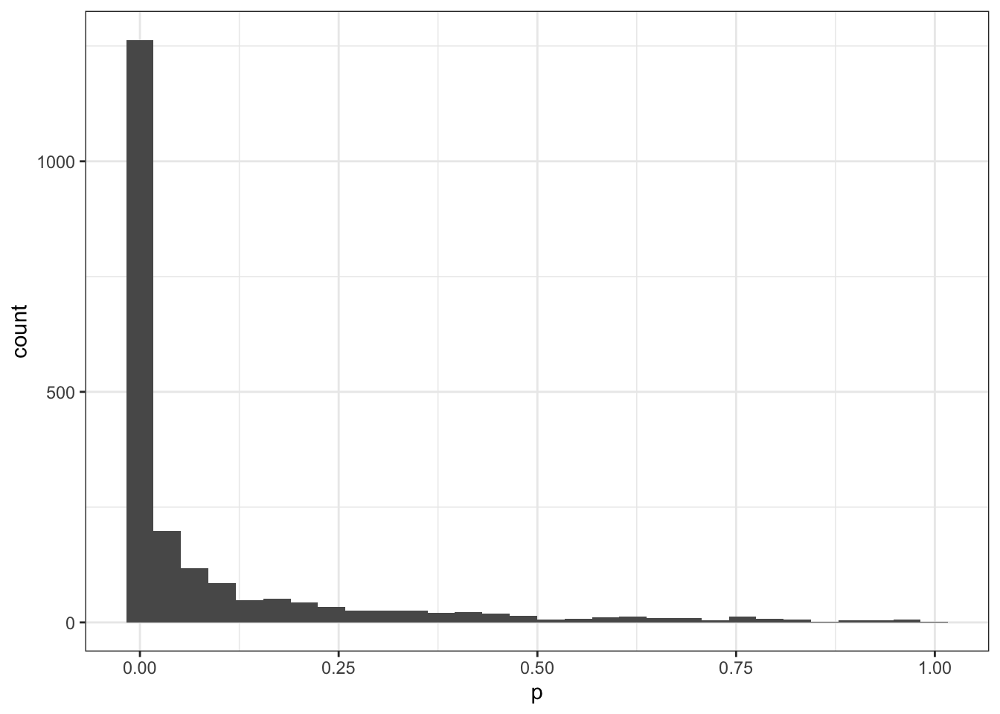
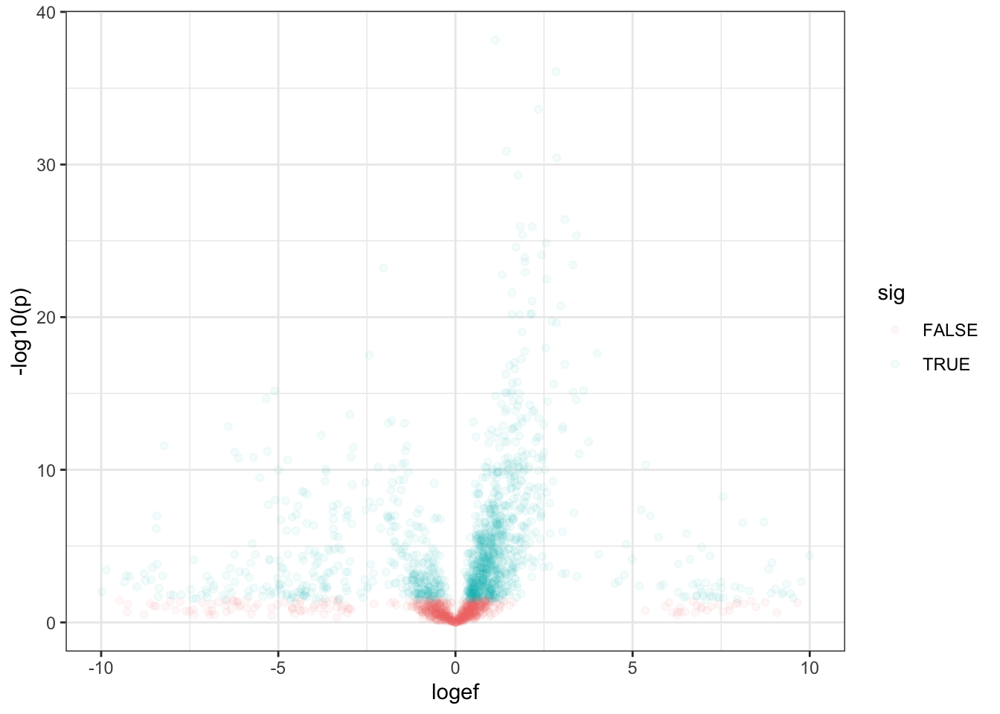
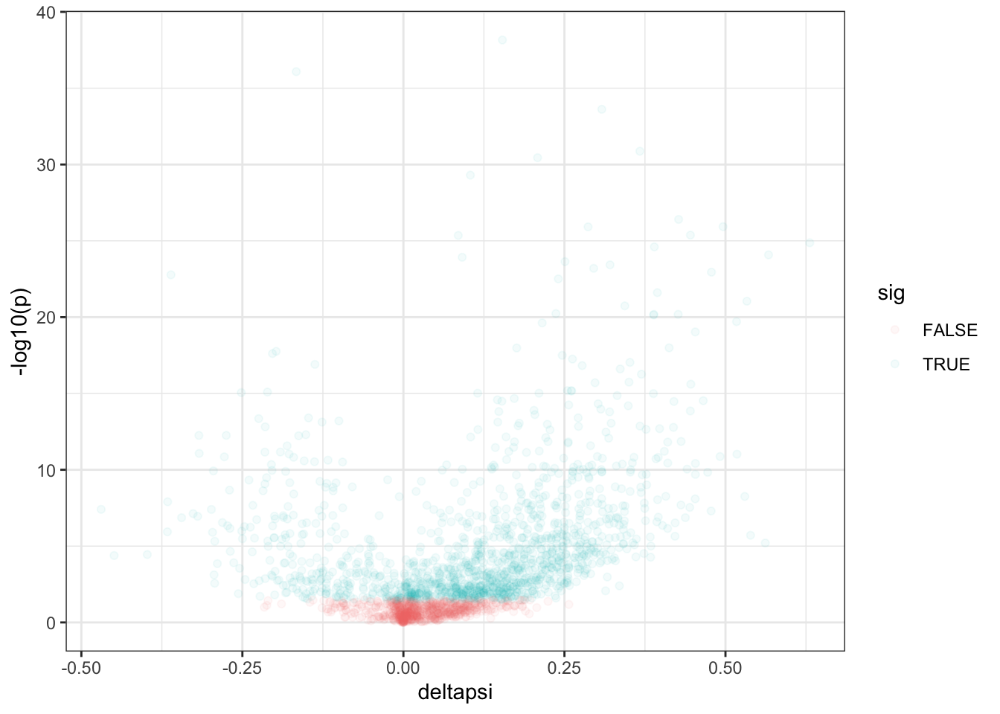
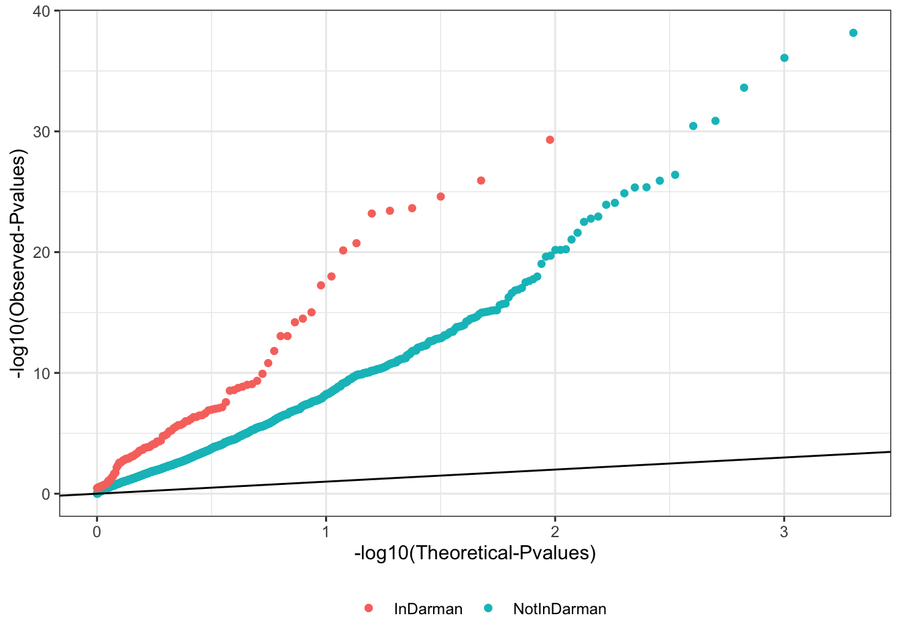
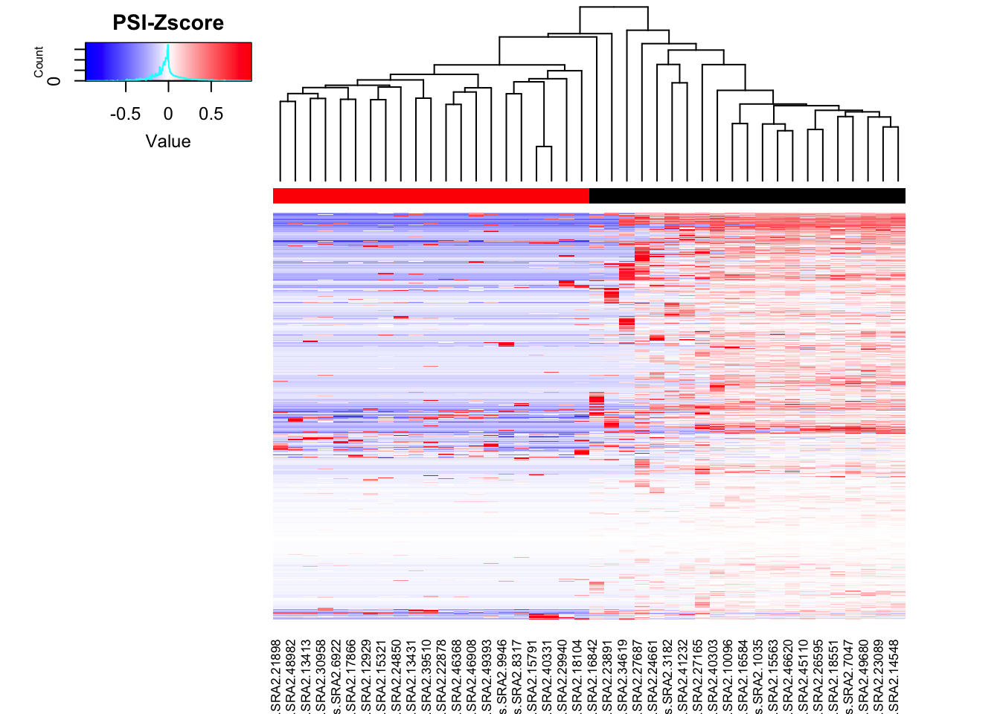
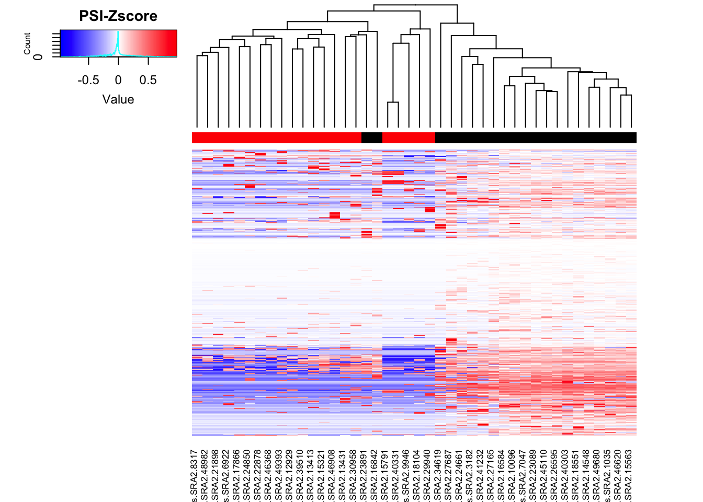
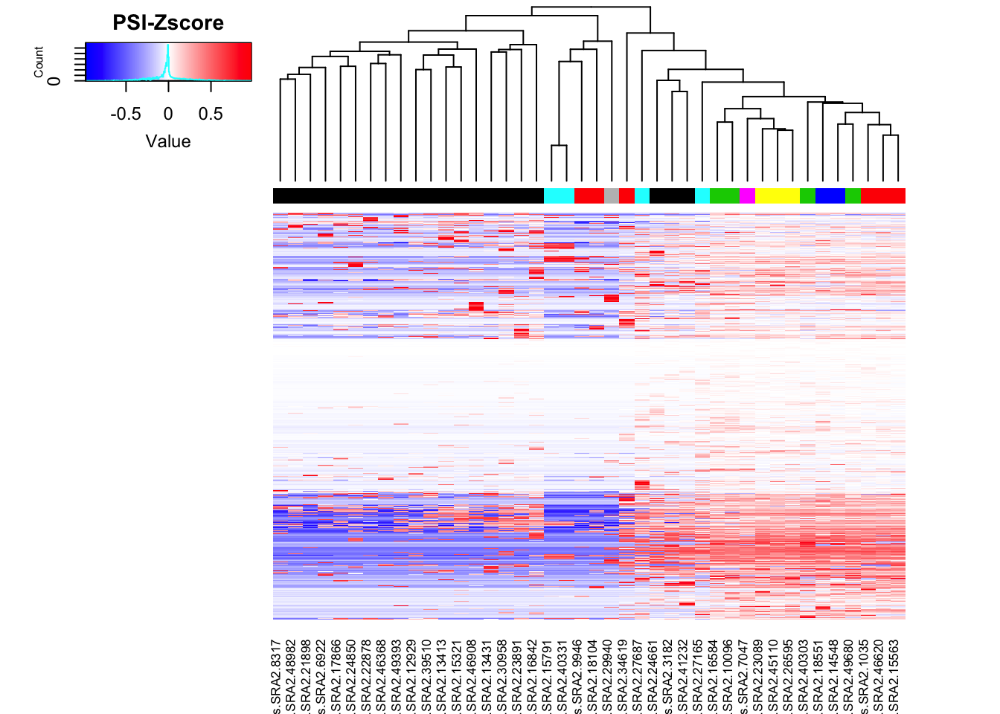
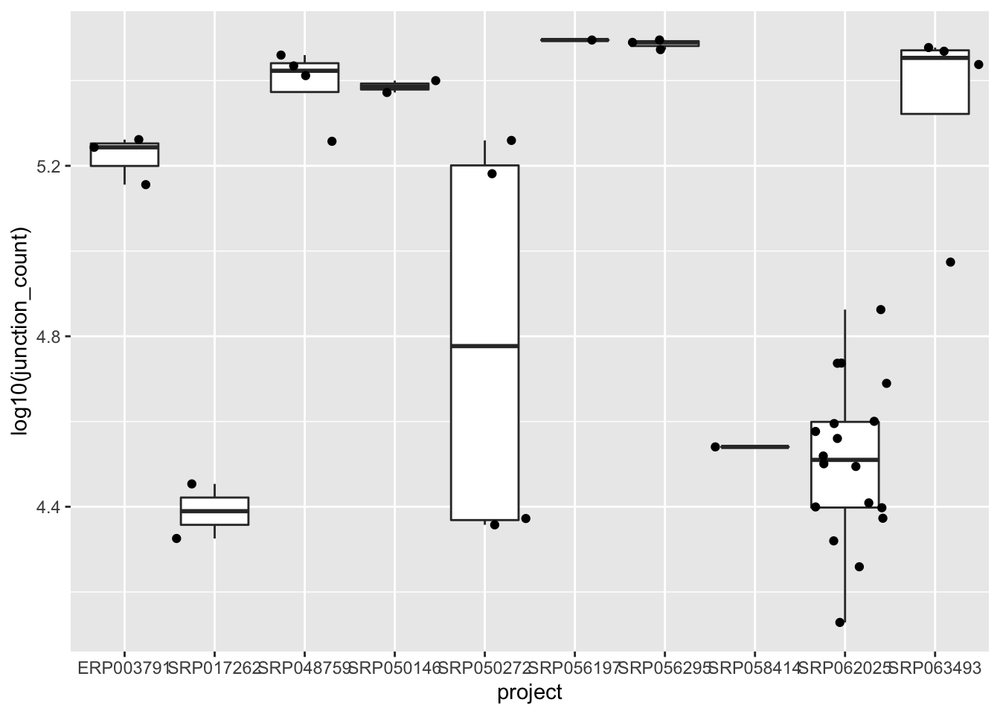

Last updated: 2019-07-24
Checks: 7 0
Knit directory: ~/Documents/Basu-Li-Labs/Current-Repos/snaptron-analysis/analysis/
This reproducible R Markdown analysis was created with workflowr (version 1.4.0). The Checks tab describes the reproducibility checks that were applied when the results were created. The Past versions tab lists the development history.
Great! Since the R Markdown file has been committed to the Git repository, you know the exact version of the code that produced these results.
Great job! The global environment was empty. Objects defined in the global environment can affect the analysis in your R Markdown file in unknown ways. For reproduciblity it’s best to always run the code in an empty environment.
The command set.seed(20190618) was run prior to running the code in the R Markdown file. Setting a seed ensures that any results that rely on randomness, e.g. subsampling or permutations, are reproducible.
Great job! Recording the operating system, R version, and package versions is critical for reproducibility.
Nice! There were no cached chunks for this analysis, so you can be confident that you successfully produced the results during this run.
Great job! Using relative paths to the files within your workflowr project makes it easier to run your code on other machines.
Great! You are using Git for version control. Tracking code development and connecting the code version to the results is critical for reproducibility. The version displayed above was the version of the Git repository at the time these results were generated.
Note that you need to be careful to ensure that all relevant files for the analysis have been committed to Git prior to generating the results (you can use wflow_publish or wflow_git_commit). workflowr only checks the R Markdown file, but you know if there are other scripts or data files that it depends on. Below is the status of the Git repository when the results were generated:
Ignored files:
Ignored: .DS_Store
Ignored: .Rhistory
Ignored: .Rproj.user/
Ignored: analysis/.DS_Store
Ignored: analysis/.Rproj.user/
Ignored: data/.DS_Store
Ignored: output/.DS_Store
Ignored: output/snakemake_out_sf3b1_k700e_e622d_ds/.DS_Store
Ignored: output/snakemake_out_sf3b1_nalm6_k700e_wt_ds/.DS_Store
Untracked files:
Untracked: analysis/20190719_sf3b1_nalm6_k700e_wt_ds.Rmd
Untracked: analysis/20190723_sf3b1_e622d_wt_ds.Rmd
Untracked: analysis/20190723_sf3b1_k700e_wt_ds.Rmd
Untracked: output/snakemake_out_sf3b1_k700e_e622d_ds/leafcutter.ds.cluster_sig.txt
Unstaged changes:
Modified: analysis/20190715_sf3b1_k700e_e622d_ds.Rmd
Deleted: analysis/20190715_sf3b1_nalm6_k700e_wt_ds.Rmd
Modified: data/other_snakemake_data/sf3b1_e622d_wt_ds.groups.txt
Modified: data/other_snakemake_data/sf3b1_k700e_wt_ds.groups.txt
Note that any generated files, e.g. HTML, png, CSS, etc., are not included in this status report because it is ok for generated content to have uncommitted changes.
These are the previous versions of the R Markdown and HTML files. If you’ve configured a remote Git repository (see ?wflow_git_remote), click on the hyperlinks in the table below to view them.
| File | Version | Author | Date | Message |
|---|---|---|---|---|
| Rmd | 6750cd6 | Benjmain Fair | 2019-06-28 | mostly marrow pruned samples |
| Rmd | d940fb8 | Benjmain Fair | 2019-06-28 | fixed marrow groups |
library(data.table)
library(dplyr)
library(ggplot2)
library(reshape2)
library(readxl)
library(ggrepel)
library(tidyverse)
library(gplots)
library(knitr)
library("RColorBrewer")#read-count-table
Numers <- '../output/snakemake_out_sf3b1_mostlymarrow/CountTableNumerators.gz'
Denoms <- '../output/snakemake_out_sf3b1_mostlymarrow/CountTableDenominators.gz'
NumeratorCountTable <- fread(paste0("gunzip -c ", Numers), sep=" ", header=TRUE, data.table=FALSE)
DenominatorCountTable <- fread(paste0("gunzip -c ", Denoms), sep=" ", header=TRUE, data.table=FALSE)
PSI_Table <- NumeratorCountTable[-1]/DenominatorCountTable[-1]
row.names(PSI_Table) <- gsub(":clu_.+", "", NumeratorCountTable$chrom)
#Replace NaNs from 0/0 operation
PSI_Table[is.na(PSI_Table)] <- 0
#read-leafcutter differntial splicing results
effect.sizes <- read.table(gzfile("../output/snakemake_out_sf3b1_mostlymarrow/leafcutter.ds.effect_sizes.txt.gz"), header=T)
cluster.significance <- fread(paste0("gunzip -c ", "../output/snakemake_out_sf3b1_mostlymarrow/leafcutter.ds.cluster_sig.txt.gz"), sep="\t", header=TRUE, data.table=FALSE)
leafcutter.merged <- effect.sizes %>%
mutate(cluster=gsub("(.+?:).+?:.+?:(clu.+?)", "\\1\\2", intron, perl=T)) %>%
mutate(junc_id=gsub("(.+?:.+?:.+?):clu.+", "\\1", intron, perl=T)) %>%
left_join(cluster.significance, by="cluster")
kable(head(leafcutter.merged))| intron | logef | Case | Control | deltapsi | cluster | junc_id | status | loglr | df | p | p.adjust |
|---|---|---|---|---|---|---|---|---|---|---|---|
| chr1:159919377:159919661:clu_1024_- | -0.8213110 | 0.3238576 | 0.0414391 | -0.2824186 | chr1:clu_1024_- | chr1:159919377:159919661 | Success | 15.654535 | 2 | 0.0000002 | 0.0000011 |
| chr1:159919377:159920330:clu_1024_- | -0.8213291 | 0.0422316 | 0.0054036 | -0.0368280 | chr1:clu_1024_- | chr1:159919377:159920330 | Success | 15.654535 | 2 | 0.0000002 | 0.0000011 |
| chr1:159919836:159920330:clu_1024_- | 1.6426402 | 0.6339107 | 0.9531573 | 0.3192465 | chr1:clu_1024_- | chr1:159919836:159920330 | Success | 15.654535 | 2 | 0.0000002 | 0.0000011 |
| chr1:8864078:8865285:clu_103_- | -19.8804927 | 0.0066518 | 0.0000000 | -0.0066518 | chr1:clu_103_- | chr1:8864078:8865285 | Success | 6.740612 | 1 | 0.0002410 | 0.0007117 |
| chr1:8864093:8865285:clu_103_- | 19.8804927 | 0.9933482 | 1.0000000 | 0.0066518 | chr1:clu_103_- | chr1:8864093:8865285 | Success | 6.740612 | 1 | 0.0002410 | 0.0007117 |
| chr1:8868058:8870452:clu_104_- | 2.7868316 | 0.5624577 | 0.5152434 | -0.0472143 | chr1:clu_104_- | chr1:8868058:8870452 | Success | 6.789227 | 2 | 0.0011258 | 0.0027652 |
Ok now let’s check that the leafcutter differential splicing results make sense. Some diagnositic plots:
# how many clusters are there
leafcutter.merged %>%
distinct(cluster, .keep_all = T) %>% dim()[1] 2100 12# and how many are significant (padjust<0.05, 0.01)
leafcutter.merged %>%
distinct(cluster, .keep_all = T) %>%
filter(p.adjust<0.1) %>% dim()[1] 1542 12#histogram of pvalues
leafcutter.merged %>%
distinct(cluster, .keep_all = T) %>%
ggplot(aes(x=p)) +
geom_histogram() +
theme_bw()
#volcano plot of cluster-pvalues and largest within-cluster-log effect size
leafcutter.merged %>%
mutate(abs.logef = abs(logef)) %>%
group_by(cluster) %>%
slice(which.max(abs.logef)) %>%
mutate(sig=p.adjust<0.05) %>%
ggplot(aes(x=logef, y=-log10(p), color=sig)) +
geom_point(alpha=0.05) +
scale_x_continuous(limits=c(-10,10)) +
theme_bw()
Same plot but for delta-PSI instead of log-effect size…
# volcano plot of cluster-pvalues and largest within-cluster-delta-psi
leafcutter.merged %>%
mutate(abs.deltapsi = abs(deltapsi)) %>%
group_by(cluster) %>%
slice(which.max(abs.deltapsi)) %>%
mutate(sig=p.adjust<0.05) %>%
ggplot(aes(x=deltapsi, y=-log10(p), color=sig)) +
geom_point(alpha=0.05) +
theme_bw()
Now let’s check that the junctions identified in Darman et al are enriched for small P-values
DarmanJunctionsList <- read.table('../data/other_snakemake_data/DarmanDiffJunctions.LiftedToHg38.bed', header=F)
# Make new id, for easier use in later filtering. Note that coordinates may need to add 1
DarmanJunctionsList$junc_id <- paste(DarmanJunctionsList$V1, DarmanJunctionsList$V2 + 1, DarmanJunctionsList$V3 + 1, sep=":")
NotInDarman<-leafcutter.merged %>%
group_by(cluster) %>%
filter(!any(junc_id %in% DarmanJunctionsList$junc_id)) %>%
slice(which.min(p))
InDarman<-leafcutter.merged %>%
group_by(cluster) %>%
filter(any(junc_id %in% DarmanJunctionsList$junc_id)) %>%
slice(which.min(p))
## QQ-plot of cluster P-vals, grouped by whether cluster contains in intron identified as differentially spliced in Daraman et al.
ggplot(NotInDarman, aes(color="NotInDarman", y=-log10(sort(p)), x=-log10(1:length(p)/length(p)))) +
geom_point() +
geom_point(data=InDarman, aes(color="InDarman")) +
xlab("-log10(Theoretical-Pvalues)") +
ylab("-log10(Observed-Pvalues)") +
geom_abline() +
theme_bw() +
theme(legend.position="bottom") +
theme(legend.title=element_blank())
PCA and heatmap of differentially spliced introns
#Get top intron within each cluster (by delta-psi) then subset the top 1000 clusters by Pval. This is the top1000 introns that will be used to plot heatmap of PSI
Top1000Introns <- leafcutter.merged %>%
mutate(abs.deltapsi = abs(logef)) %>%
group_by(cluster) %>%
slice(which.max(abs.deltapsi)) %>%
ungroup() %>%
top_n(-1000, p) %>% pull(intron)
Groups <- read.table("../data/other_snakemake_data/MostlyMarrowContrast.groups")
#First make a heatmap of Darman et al junctions
Heatmap <- PSI_Table[DarmanJunctionsList$junc_id,] %>%
t() %>% scale(scale=F) %>% t() %>%
as.data.frame() %>% drop_na() %>% as.matrix()
HeatmapGroupLabels <- plyr::mapvalues(colnames(Heatmap), from=Groups$V1, to=Groups$V2, warn_missing = FALSE)
heatmap.2(Heatmap, col=colorRampPalette(c("blue", "white", "red"))(n = 299), dendrogram="column", trace="none", labRow="", key.title="PSI-Zscore", ColSideColors=HeatmapGroupLabels)
#Heatmap of top leafcutter identified introns
Heatmap <- PSI_Table[Top1000Introns,] %>%
t() %>% scale(scale=F) %>% t() %>%
as.data.frame() %>% drop_na() %>% as.matrix()
heatmap.2(Heatmap, col=colorRampPalette(c("blue", "white", "red"))(n = 299), dendrogram="column", trace="none", labRow="", key.title="PSI-Zscore", ColSideColors=HeatmapGroupLabels)
What’s up with the near-identical samples: check correlation matrix
SRA_metadata <- read.delim(gzfile("../output/snakemake_out_sf3b1_mostlymarrow/SnaptronMetadata.SRA2.txt.gz"))
MetadataOfSamples <- data.frame(colnames(Heatmap)) %>%
mutate(rail_id=as.numeric(gsub("\\.project2\\.yangili1\\.snaptron\\.processed_to_bedfiles\\..+?\\.(.+)", "\\1", colnames(Heatmap), perl=T))) %>%
left_join(SRA_metadata, by="rail_id")
#color accoring to source (tissue of origin)
HeatmapGroupLabels <- plyr::mapvalues(colnames(Heatmap), from=MetadataOfSamples$colnames.Heatmap., to=MetadataOfSamples$project, warn_missing = FALSE)
Heatmap <- PSI_Table[Top1000Introns,] %>%
t() %>% scale(scale=F) %>% t() %>%
as.data.frame() %>% drop_na() %>% as.matrix()
heatmap.2(Heatmap, col=colorRampPalette(c("blue", "white", "red"))(n = 299), dendrogram="column", trace="none", labRow="", key.title="PSI-Zscore", ColSideColors=HeatmapGroupLabels)
ggplot(MetadataOfSamples, aes(x=project, y=log10(junction_count))) +
geom_boxplot(outlier.shape=NA) +
geom_jitter(position=position_jitter(width=.5, height=0))
MetadataOfSamples %>%
filter(junction_count!=0) %>%
select(rail_id) rail_id
1 10096
2 1035
3 12929
4 13413
5 13431
6 14548
7 15321
8 15563
9 15791
10 16584
11 16842
12 17866
13 18104
14 18551
15 21898
16 22878
17 23089
18 23891
19 24661
20 24850
21 26595
22 27165
23 27687
24 29940
25 30958
26 3182
27 34619
28 39510
29 40303
30 40331
31 41232
32 45110
33 46368
34 46620
35 46908
36 48982
37 49393
38 49680
39 6922
40 7047
41 8317
42 9946
sessionInfo()R version 3.5.1 (2018-07-02)
Platform: x86_64-apple-darwin15.6.0 (64-bit)
Running under: macOS High Sierra 10.13.6
Matrix products: default
BLAS: /Library/Frameworks/R.framework/Versions/3.5/Resources/lib/libRblas.0.dylib
LAPACK: /Library/Frameworks/R.framework/Versions/3.5/Resources/lib/libRlapack.dylib
locale:
[1] en_US.UTF-8/en_US.UTF-8/en_US.UTF-8/C/en_US.UTF-8/en_US.UTF-8
attached base packages:
[1] stats graphics grDevices utils datasets methods base
other attached packages:
[1] RColorBrewer_1.1-2 knitr_1.23 gplots_3.0.1.1
[4] forcats_0.4.0 stringr_1.4.0 purrr_0.3.2
[7] readr_1.3.1 tidyr_0.8.3 tibble_2.1.1
[10] tidyverse_1.2.1 ggrepel_0.8.1 readxl_1.3.1
[13] reshape2_1.4.3 ggplot2_3.2.0 dplyr_0.8.3
[16] data.table_1.12.2
loaded via a namespace (and not attached):
[1] gtools_3.8.1 tidyselect_0.2.5 xfun_0.6
[4] haven_2.1.0 lattice_0.20-35 colorspace_1.4-1
[7] generics_0.0.2 htmltools_0.3.6 yaml_2.2.0
[10] rlang_0.4.0 pillar_1.3.1 glue_1.3.1
[13] withr_2.1.2 modelr_0.1.4 plyr_1.8.4
[16] munsell_0.5.0 gtable_0.3.0 workflowr_1.4.0
[19] cellranger_1.1.0 rvest_0.3.3 caTools_1.17.1.2
[22] evaluate_0.13 labeling_0.3 highr_0.8
[25] broom_0.5.2 Rcpp_1.0.1 KernSmooth_2.23-15
[28] scales_1.0.0 backports_1.1.4 gdata_2.18.0
[31] jsonlite_1.6 fs_1.2.7 hms_0.4.2
[34] digest_0.6.18 stringi_1.4.3 grid_3.5.1
[37] rprojroot_1.3-2 bitops_1.0-6 cli_1.1.0
[40] tools_3.5.1 magrittr_1.5 lazyeval_0.2.2
[43] crayon_1.3.4 whisker_0.3-2 pkgconfig_2.0.2
[46] xml2_1.2.0 lubridate_1.7.4 assertthat_0.2.1
[49] rmarkdown_1.12 httr_1.4.0 rstudioapi_0.10
[52] R6_2.4.0 nlme_3.1-137 git2r_0.26.1
[55] compiler_3.5.1